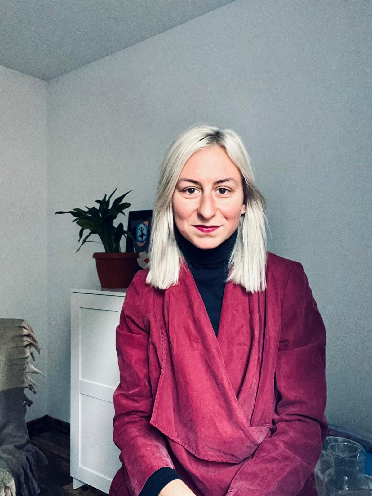

Despre mine
Sunt psihoterapeut format în [...], cu experiență în lucrul cu adulți și tineri. Abordarea mea este centrată pe autenticitate, empatie și relație terapeutică reală.
Am absolvit [...], am participat la școli de vară, formări și supervizări în [...]. Terapia pentru mine este un proces de cunoaștere și reconectare profundă cu sinele.
„Un spațiu cald, unde m-am simțit înțeles(ă) și acceptat(ă). Recomand cu încredere.”